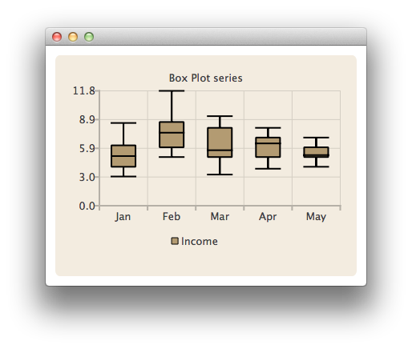

BoxPlotSeries QML Type
Presents data in box-and-whiskers charts. More...
| Import Statement: | import QtCharts 2.7 |
| Instantiates: | QBoxPlotSeries |
| Inherits: |
Properties
- axisX : AbstractAxis
- axisXTop : AbstractAxis
- axisY : AbstractAxis
- axisYRight : AbstractAxis
- boxOutlineVisible : bool
- boxWidth : real
- brushFilename : string
- count : int
Signals
- boxsetsAdded(list sets)
- boxsetsRemoved(list sets)
- clicked(BoxSet boxset)
- doubleClicked(BoxSet boxset)
- hovered(bool status, BoxSet boxset)
- pressed(BoxSet boxset)
- released(BoxSet boxset)
Methods
- append(string label, VariantList values)
- append(BoxSet box)
- at(int index)
- clear()
- insert(int index, string label, VariantList values)
- remove(QBoxSet boxset)
Detailed Description
A box plot series acts as a container for box-and-whiskers items. Items from multiple series are grouped into categories according to their index value.
The BarCategoryAxis class is used to add the categories to the chart's axis. Category labels have to be unique. If the same category label is defined for several box-and-whiskers items, only the first one is drawn.
The following QML code snippet shows how to create a simple box-and-whiskers chart:
import QtQuick 2.0 import QtCharts 2.0 ChartView { title: "Box Plot series" width: 400 height: 300 theme: ChartView.ChartThemeBrownSand legend.alignment: Qt.AlignBottom BoxPlotSeries { id: plotSeries name: "Income" BoxSet { label: "Jan"; values: [3, 4, 5.1, 6.2, 8.5] } BoxSet { label: "Feb"; values: [5, 6, 7.5, 8.6, 11.8] } BoxSet { label: "Mar"; values: [3.2, 5, 5.7, 8, 9.2] } BoxSet { label: "Apr"; values: [3.8, 5, 6.4, 7, 8] } BoxSet { label: "May"; values: [4, 5, 5.2, 6, 7] } } }

See also BoxSet and BarCategoryAxis.
Property Documentation
axisX : AbstractAxis |
The x-axis used for the series. If you leave both axisX and axisXTop undefined, a BarCategoryAxis is created for the series.
See also axisXTop.
axisXTop : AbstractAxis |
axisY : AbstractAxis |
The y-axis used for the series. If you leave both axisY and axisYRight undefined, a ValueAxis is created for the series.
See also axisYRight.
axisYRight : AbstractAxis |
boxOutlineVisible : bool |
The visibility of the box outline.
boxWidth : real |
The width of the box-and-whiskers item. The value indicates the relative width of the item within its category. The value can be between 0.0 and 1.0. Negative values are replaced with 0.0 and values greater than 1.0 are replaced with 1.0.
brushFilename : string |
The name of the file used as a brush for the series.
count : int |
The number of box-and-whiskers items in a box plot series.
Signal Documentation
boxsetsAdded(list sets) |
This signal is emitted when the box-and-whiskers items specified by sets are added to the series.
The corresponding signal handler is onBoxsetsAdded().
Note: The corresponding handler is onBoxsetsAdded.
boxsetsRemoved(list sets) |
This signal is emitted when the box-and-whiskers items specified by sets are removed from the series.
The corresponding signal handler is onBoxsetsRemoved().
Note: The corresponding handler is onBoxsetsRemoved.
clicked(BoxSet boxset) |
This signal is emitted when the user clicks the box-and-whiskers item specified by boxset in the chart.
The corresponding signal handler is onClicked().
Note: The corresponding handler is onClicked.
doubleClicked(BoxSet boxset) |
This signal is emitted when the user double-clicks the box-and-whiskers item specified by boxset in the chart.
The corresponding signal handler is onDoubleClicked().
Note: The corresponding handler is onDoubleClicked.
This signal is emitted when a mouse is hovered over the box-and-whiskers item specified by boxset in the chart. When the mouse moves over the item, status turns true, and when the mouse moves away again, it turns false.
The corresponding signal handler is onHovered().
Note: The corresponding handler is onHovered.
pressed(BoxSet boxset) |
This signal is emitted when the user presses the boxset on the chart.
The corresponding signal handler is onPressed.
Note: The corresponding handler is onPressed.
released(BoxSet boxset) |
This signal is emitted when the user releases the mouse press on the box-and-whiskers item specified by boxset in the chart.
The corresponding signal handler is onReleased().
Note: The corresponding handler is onReleased.
Method Documentation
append(string label, VariantList values) |
Appends a new box-and-whiskers item with the label specified by label and the values specified by values to the series.
append(BoxSet box) |
Appends the box-and-whiskers item specified by box to the series.
at(int index) |
Returns the box-and-whiskers item in the position specified by index.
clear() |
Removes all box-and-whiskers items from the series and permanently deletes them.
Inserts a new box-and-whiskers item with the label specified by label and the values specified by values to the series at the position specified by index.
remove(QBoxSet boxset) |
Removes the box-and-whiskers item specified by boxset from the series.